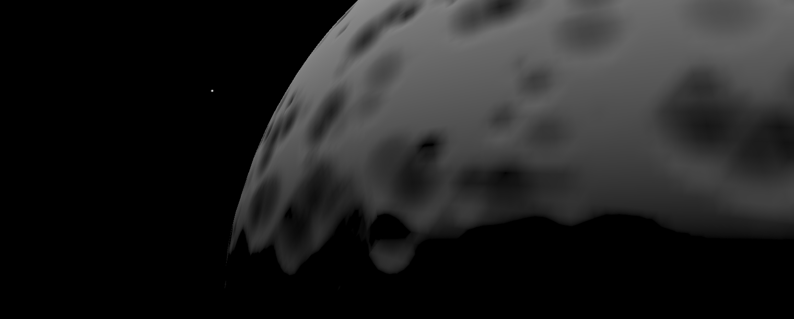
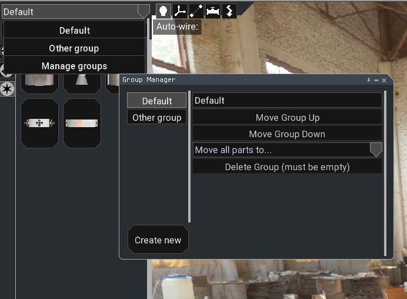
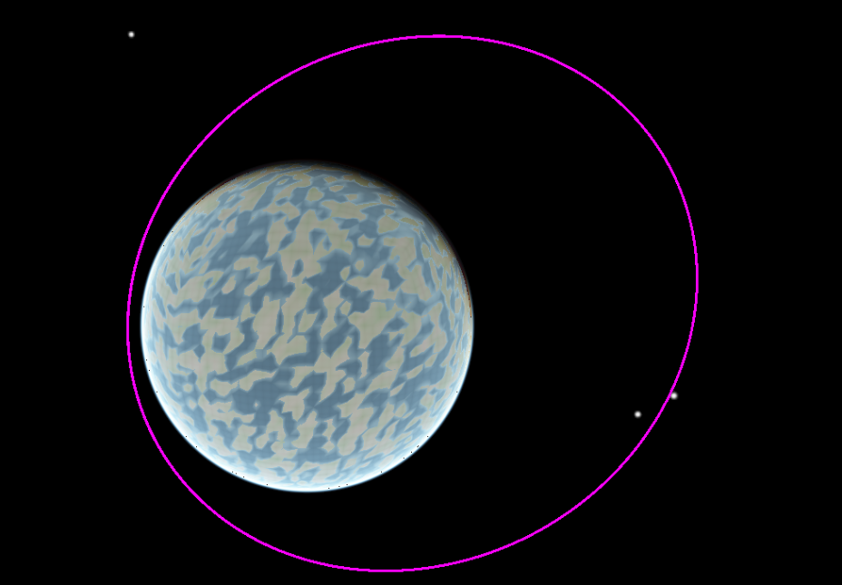

On the last blogpost I stated that OSPGL could be playable by the end of 2022. I was wrong! Nevertheless, I've made a lot of progress, and a first release should not be too far away.
Almost 4 years
The OSPGL repo was born the 6th of October, 2019. Previously, I had already worked for a few months on a codebase which no longer exists, mostly to experiment with the intricacies of having a massive world (for example, using bullet with double precision, or cube-sphere worlds).
For temporal context, KSP2 was announced a few months earlier, in August of the same year, so both projects have been developed for a similar length of time. Of course, total man-hours dedicated to the projects are nowhere close, but I find it kind of remarkable how both projects are going to be "releasing" (KSP2 will release in early-access, and OSPGL is just now starting to become playable) at a similar time-frame.
I've got to admit that I've recently sped up development due to the idea that KSP2's release would bring a lot of people to this project. They say that a good first-impression goes a long way, and I kind of fear that an audience that seeks an open-source space game will be highly critical as they are looking for an improvement over KSP2 (Otherwise, they would be playing it!). Also, I expect people interested in modding to be attracted to this project, so I'm also trying to start documenting how to develop mods for the project, as explained later.
Philosophical reflections aside, lets get into technical talk!
What has changed
Crater Generator
Generating craters in planets is an interesting challenge. If you want to have a realistic surface, then you may need to generate millions of them, so manually placing them, or procedurally generating them and then storing their locations is not viable.
Instead, it would be useful if you could sample a surface point, and somehow obtain the distance of that point to the center of the nearest crater. This could be implemented using cellular noise, already present in FastNoise, but I decided to implement a new noise generator dedicated exclusively to the task.
The results are fairly satisfactory, both in the performance side, and on the visual side. Here's an example of crater distribution on a moon-sized planet, with exaggerated craters. Note that only one pass of craters is done, in a real use case, there would be many layers of differently sized craters, down to tiny craters only a few meters in diameter.

Lua take-over
This is the biggest change, although sadly it's a "back-end" change and there's not much to show.
Finally, a lot of "game" code is being written in lua. All entities are now written in lua, and the flight and map scenes are in the works. The editor is still implemented in C++, and will probably remain that way as porting it over to lua would take too much time for little benefit.
The great advantage of having a lot of code written in lua is that mods will be able to customize it greatly. For example, a player could desire a super-hardcore flight scene where you play from a command center on Earth and can only interact with the vehicle through in-game screens and buttons.
Another advantage is a much faster iteration time, as there's no need to compile the game each time a small change is applied. This allows quicker development, which ends up being more enjoyable, so the end result is that I spend more time working on OSPGL! :)
The only disadvantage is that performance is expected to be a little bit worse than just running the code in C++, but it should be alright as scene code represents very little of the "computational cost" of the game. The bullet physics engine, orbital simulation, terrain generation and other stuff is all quickly running in C++ and take up the vast majority of the frame CPU time.
Lua language server
I've started to document how to develop lua code for OSPGL at the OSPGL documentation repo, although this may later on be moved to a github page which will also host the "front-page" for OSPGL, so don't link to it just yet!
Also, compatibility with sumneko's lua language server has been implemented via a series of
lua definition files, which contain the signature and documentation for all OSPGL library functions, and a small plugin that makes the
behavior of dofile and require compatible with the language server.
The end result is a really streamlined lua editing experience, where the editor will most of the time have the right auto-completions ready,
and a system through which code can be documented, including expected types for function arguments, etc... Furthermore, the auto-completion
works with any mod in the res/ directory, so developing a "mod of another mod" should be as comfortable as writing core OSPGL code.
There are of course some problems, as the language server is still in development. For example, if you multiply a vector with a scalar, you must put the scalar at the right of the vector, as otherwise the language server will think that the result is a scalar instead of a vector. There's also a problem where functions with many overloads fail to resolve correctly. This may be fixed in the language server soon, but another fix would be to have independent names for each function.
For example, the normalize function from glm, which works on all kinds of vectors and quaternions,
could become normalize_vec3, normalize_vec4, etc... I'm not a fan of this approach, and for now the fix is to place
a "typecast" next to the operation, as follows:
local vec = glm.vec3(1.0, 1.0, 1.0)
local nrm = glm.normalize(vec) ---@cast nrm glm.vec3
-- Now the language server knows that nrm is a vec3, instead of any of the vector types
Hopefully the language server will evolve quickly and these bugs will be fixed!
Lua 5.2 Compatibility
We use the sol2 library to bridge C++ and lua, which has some limitations with LuaJIT, the high speed lua implementation used. Thankfully, many of these can be fixed by adding a simple compile-time definition. This has further improved the simplicity of writing lua code, as you don't need to have special syntax when iterating over C++ containers.
GUI Progress
The GUI is slowly becoming fully-featured, as a showcase, here's a screenshot from the (WIP) group manager in the editor:

Drop-down boxes were particularly hard to implement, as they require overlaying a canvas on top of the rest of the layout.
The code has also changed towards the better. To guarantee that the GUI can block game elements, and the game can block the GUI, the following passes are implemented:
- Pre-prepare pass: Every widget may add an overlay widget to the renderer in this pass (for example, the dropdown box)
- Position pass: The
positionfunction of widgets is called, starting at the bottom, to enforce the layout of widgets - Prepare pass: The
preparefunction of widgets is called, top to bottom, so that widgets can block each other and the game. No user actions are executed. - Game pass: The game handles inputs, and may block the GUI. Input handling must respect the result from prepare pass (ie, if the mouse is blocked, don't allow part picking)
- Input pass: The
preparefunction of widgets is called again, top to bottom, so widgets may be blocked by the 3D game. User actions are finally executed.
Previously, the code was a mess and required a whole lot of calls to prepare before the GUI result was as expected. Also, widgets couldn't be on top
of each other as blocking would break, but now with the top-to-bottom input handling everything works as expected.
Part groups
Part groups are mostly an user facing feature which allows easier interaction with the auto-wire system, and also allow easier organization of the vehicle. During part placement, you choose which group the part goes into, and this will affect the behavior of the auto-wiring system.
Orbit Prediction
The use of n-body physics means that orbit prediction is needed, as we can't simply draw a series of conics. The implementation of such a system is not an easy task. First of all, it should run in a separate thread to avoid slowing down the game. Results from predictions are not needed instantly. Furthermore, there are two use-cases for predictions: Real-time prediction, which is used while the vehicle is accelerating to get an idea of the trajectory, and planning prediction, which is used in the map view to design trajectories. It's also interesting to display the trajectory of all the bodies in the solar system.
Real-time prediction
Currently, this is implemented as a worker thread which runs an n-body simulation with every body on the solar system, the active vehicle, and any vehicle that's needed for reference frames. After every step the relative position of the vehicle with the reference frame is stored, to further offload the reference frame change into the thread.
The predictor runs for a set length of time, and then returns its data to the main thread, which will draw the trajectory. Immediately, the thread starts predicting again with the new position and velocity of the vehicle, which may be accelerating.
The frequency at which the predictor runs is adjustable, and it will use a variable timestep to allow real-time prediction of a wide variety of trajectories: From a very precise rendezvous in orbit, to an interplanetary transfer.
Planning prediction (Not yet implemented)
This kind of prediction allows the user to design a trajectory, and then observe it on many different frames of reference. This would be used during planning of missions. The main difference with the real-time prediction is that we can use a more reduced time-step, as instant results are not needed, and we must store the position of all bodies which will be used for reference frame calculation. If only one body is going to be used as a reference frame, we can also use the same system as before, which is expected to be faster as only a fraction of the data has to be stored.
System prediction (Not yet implemented)
To show the trajectories of different bodies in the map view, a prediction should be run. This only needs to be done every few years of in-game time, and the simulation can be run with a high time-step as only really approximate orbits are required in the map view. We could also use kepler orbits for the displayed trajectories of certain bodies which are known to be on a very stable orbit. (In the real solar system, all of them!)
Using stored orbital data for predictions?
One possible speed-up for all of these prediction systems is pre-calculating the position of all system elements and storing this data. The time-step for this simulation should be relatively low, but to reduce the quantity of stored data we could store only a few data points and perform interpolation.
This approach would reduce the computational cost of predictions to O(n), n being the number of bodies, as all the O(n²) n-body calculations are already done. Sadly, this would use quite a lot of disk / RAM space (unless we store just a minimum of data), and would require some kind of accelerator structure to access said data in an efficient manner.
For now, orbital prediction will brute-force and simulate the whole solar system each time. An easier optimization would be to only simulate significant bodies for the prediction. For example, if the reference frame is the Earth, the effect of Io on your vessel trajectory will be minimal. This heuristic could be fairly simple to implement.
Orbit drawing
An efficient line drawer has been implemented. It does most of the work in the GPU, as it turns out that drawing lines is an extremely parallel operation. It allows arbitrarily thick lines with mitering, so the end result is a really smooth curve.

Bullet3 Patches
Some small fixes have been applied to the bullet3 physics engine to make raycasting work. Terrain was implemented using a custom concave shape, which appears to be broken, so it exposed itself as an bullet3 triangle shape. This worked fine for collisions, but caused crashes during raycasting. The source of the crash was tracked down and fixed.
Welded group raycasting
Welded groups are a group of pieces which are combined into a single rigid-body, thus increasing performance and also making a totally rigid connection. The problem with this approach is that raycasting couldn't tell apart which piece it hit, as all of them shared the same rigid body. To fix this problem, a small modification was done to bullet3 which allows retrieving not only the hit rigid body, but also the collider, from the raycast callbacks.
In the following video you can see that raycast picking works just fine in the flight scene, where the whole vehicle is a single rigidbody:
What's needed for a first release
The game may become playable well before all of these features are implemented, but these are kind of needed to be able to say that OSPGL is released. I'll probably get a playable version without many of those released first (kind of an early-access? although everybody has access to OSPGL, even right now!)
Game scenes
Main menu
The main menu will allow management of save games, and game settings.
As of now the menu scene is simply an empty scene, but the game code to load saves and similar is already implemented. It's possible to bypass the main menu via launch arguments for easy development.
Manager view
The manager view will allow access to any active flying vehicle, and also access to the editor to create and launch new vehicles. It will also allow launching vehicles from any launchpad in the solar system.
Flight and map scenes
The flight scene will allow the player to view their vehicle and interact manually with each piece (through context menus).
The map scene will allow the player to observe the trajectory of their vehicle, of other vehicles and of bodies of the solar system. Orbits may be plotted in any reference frame the player wishes, including using other vehicles as origins.
Maneuver planning will also be implemented, possibly allowing non-instant velocity changes (as this is pretty easy with n-body).
Finally, the player will also be able to generate a Kepler orbit that "kisses" their trajectory, and if the orbit is reasonably similar to the n-body trajectory, they will be able to leave a vessel in a kepler orbit, simulating manual station keeping. (This may be implemented as a separate mod, as it's a bit outside the scope of the game engine)
In both of them, a navball will be available (which can also have a custom reference frame), alongside a series of movable GUI widgets that detail the trajectory of the vehicle. A toolbar will also be available for mods to place their buttons.
Symmetry in the editor
Symmetry is one of the high-priority features, as otherwise you are kind of limited to linear rockets. Symmetry will work by storing a bunch of metadata in every part that's used by the editor to determine which parts are results of symmetry, but has no actual physical significance in the vehicle. (ie, in the flight scene two symmetric tanks are totally different).
Symmetric parts will also be compatible with wiring and plumbing. For example, if you place 8 side boosters on a rocket, wiring up and setting the plumbing for one will be reflected in all of them. This behaviour of course will be toggle-able.
Symmetry will be specified by giving a reference point and a reference axis, which allows radial symmetry and also planar symmetry. This will be implemented into the editor GUI in an intuitive manner, but one that allows the user to achieve interesting designs without being too restrictive.
Auto-wiring
Manually placing every wire on the vehicle can be very boring, but thankfully, this can be automated for most rockets. Auto-wiring should be highly configurable, and allow, for example, wiring every single part placed to a given machine.
In the vast majority of rockets, everything is going to be wired either to the capsule, or to a staging controller, so a simple auto-wiring script could implement this behaviour.
A set of working (procedural?) machines
These include engines, fuel tanks, capsules, landing gear, fins, staging controllers, etc...
Using procedural parts has the huge advantage of reducing the number of assets that have to be created, and also improving vehicle building as you have much more freedom.
Physical atmospheres
For a first release, a very simple drag model would suffice, but later on it would be interesting to implement some kind of voxel aerodynamic simulator (similar to Ferram Aerospace Research mod).
Atmospheres would also interact with the material system, so that intakes can be implemented. Also, whatever the rocket expels could accumulate around it if it's not moving (local atmosphere).
Audio
The game already has an audio engine implemented that's able to play sounds, but there's currently no use for them. I would like to focus on implementing some kind of procedural audio generation, and also effects for muffling sounds when there's no atmosphere.
Moving origin
Right now the origin of the world is always fixed at the center of the solar system. With double precision, this is pretty much fine for 90% of space missions, but if you go, for example, to Pluto, some errors start to become apparent. (Slightly jittery physics, mostly). This can be fixed extremely easily by making the origin move to the active vehicle position whenever time-warp is stopped (or on scene load), as during real-time gameplay it's pretty much impossible to get far away from the origin as to experience errors (it would take you many years of real time).
This is in stark contrast to using floats, in that case you need to move the origin in as little as ~5km, which is an issue in the original KSP, as it limited loading distance for vehicles, among other problems.
Finally, the only thing that needs a moving origin is the bullet physics engine, as orbital simulation, and landed object placement doesn't suffer as much from the slight inaccuracies that start appearing. These would only become a problem at distances that would never be encountered during normal gameplay.
If interstellar travel is ever implemented, each star system would have an unique origin, so travel from one star to another would not be truly seamless.
Better terrain detail
This may be achieved either through further optimization of the planet renderer code, to allow the tiles to be loaded earlier and thus having a more detailed planet, and also through the implementation of planetary-wide textures, including normal maps, generated only once and stored on disk. This way, planets could use a low polygon approximation of the surface, that gets detailed using textures, so that from space they look detailed, but don't require a massive number of polygons.
This would also improve the look of the planet when flying high above it, specially the normal maps, as otherwise everything looks too flat.
The future
After these basic features are implemented, the development will continue towards a more polished state. The list of ideas is endless, and many of them would be implemented as mods instead of directly into the engine. These include climate simulation (clouds!), career mode, multiplayer (mostly focused on same-vehicle multiplayer for ease of implementation), realistic radio, realistic electrical systems, in-game computers, etc...